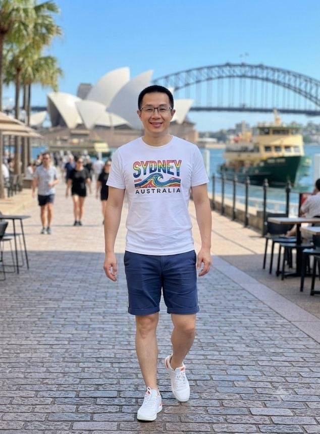

如果用履歷的方式介紹自己，大概會是這樣：我在澳洲做過打工度假、在雪梨的餐飲業與郵輪上工作過；後來去了菲律賓，在馬尼拉的夜生活產業做過海外經理；我是一名自由工作者，靠著一台Ｍacbook Pro，在世界各地移動、接案、生活。
這份履歷是真的，但它只說了一半。
另一半的故事是——我曾經在雪梨套房的房間裡，盯著天花板，想不起來上一次真心大笑是什麼時候；也曾經在馬尼拉結束工作回家的路上，覺得自己好像被什麼掏空了，卻說不出是什麼。那些「自由」背後，其實藏著很多沒有被好好安放的情緒。
我花了很長一段時間才明白：孤獨與焦慮，不是自由要付出的代價，而是提醒我需要回頭照顧自己的訊號。
從逃避，到練習與自己相處
一開始，我用更多的行程、更多的社交、更多的「下一個目的地」，去掩蓋內心那份不安。後來才慢慢發現，無論飛到哪裡，那個沒被安頓好的自己，都會一起打包上飛機。
於是我開始練習：寫日記、練習正念呼吸、學著在混亂的生活步調裡，留一段誰都不能打擾的安靜時間。這些練習沒有讓生活變得比較容易，但讓我在動盪之中，慢慢找回一種內在的秩序感。
這個部落格，是我持續整理自己的地方
漂流誌記錄的，是海外工作、數位遊牧生活的真實片段，也是我把孤獨、焦慮、迷惘，一點一點轉化為心靈成長養分的筆記。如果你也在異地生活、遠距工作，或只是覺得人生正在漂泊——希望這裡的文字，能陪你一段路。